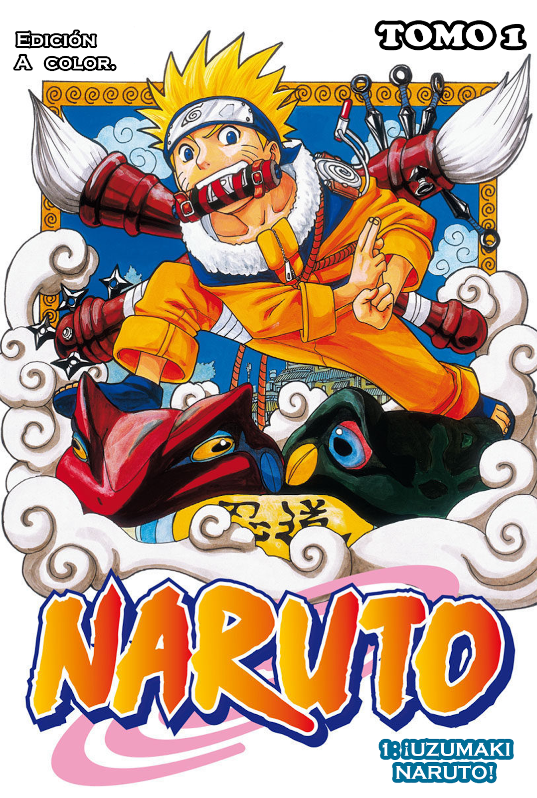
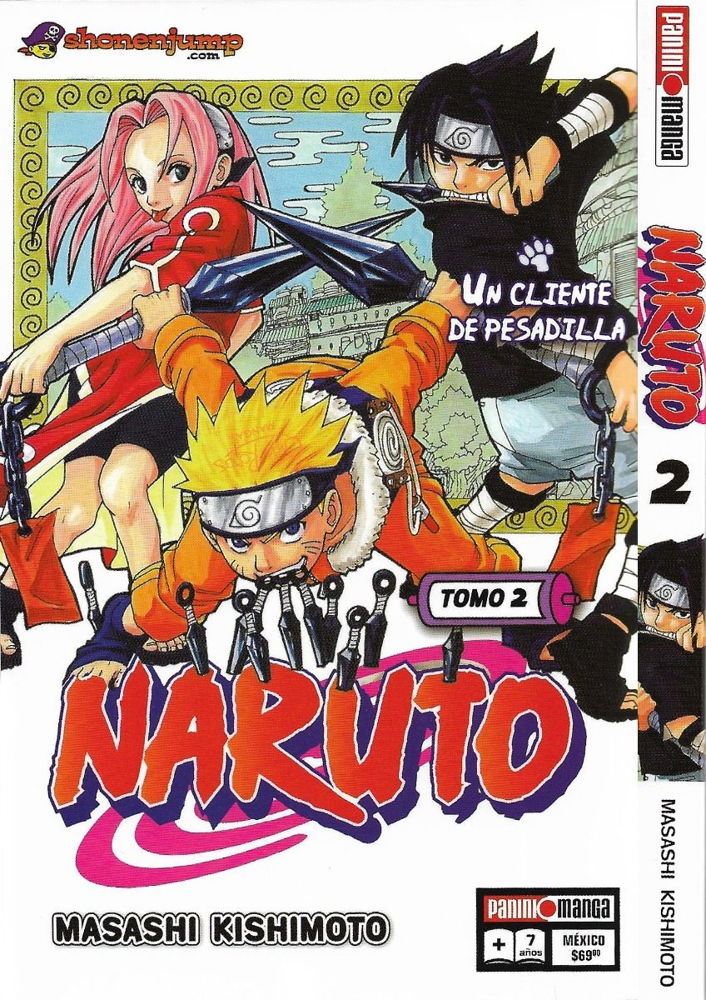
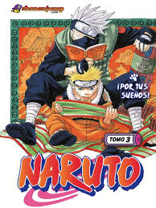

El sueño de Naruto es el de llegar un día a heredar el nombre de Hokage, reservado a los graden héroes, y de convertirse en el mejor ninja de todos los tiempos.

Naruto, Sasuke y Sakura, que han logrado superar la prueba del maestro Kakashi para convertirse en ninjas de grado inferior (aprendices), se enfrentan a una importante misión proteger al señor Tazuna.

¡Zabuza, el demonio que debería haber sido aniquilado por el sharingan de Kakashi, sigue vivo! Las cosas se ponen feas para Naruto y sus amigos